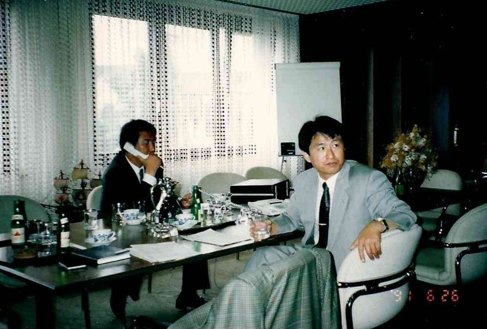
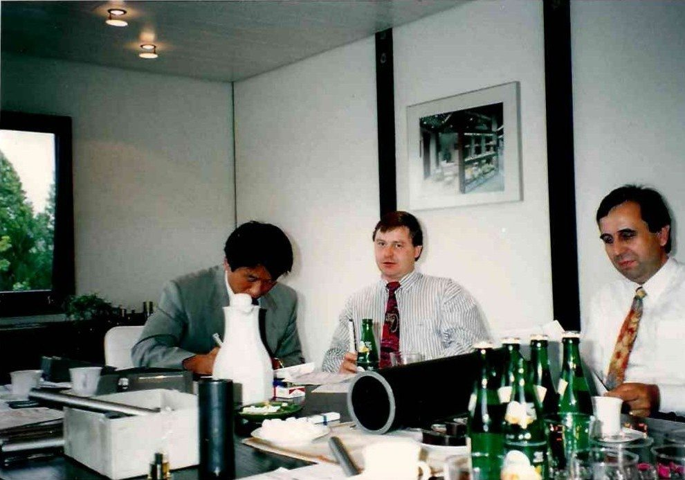
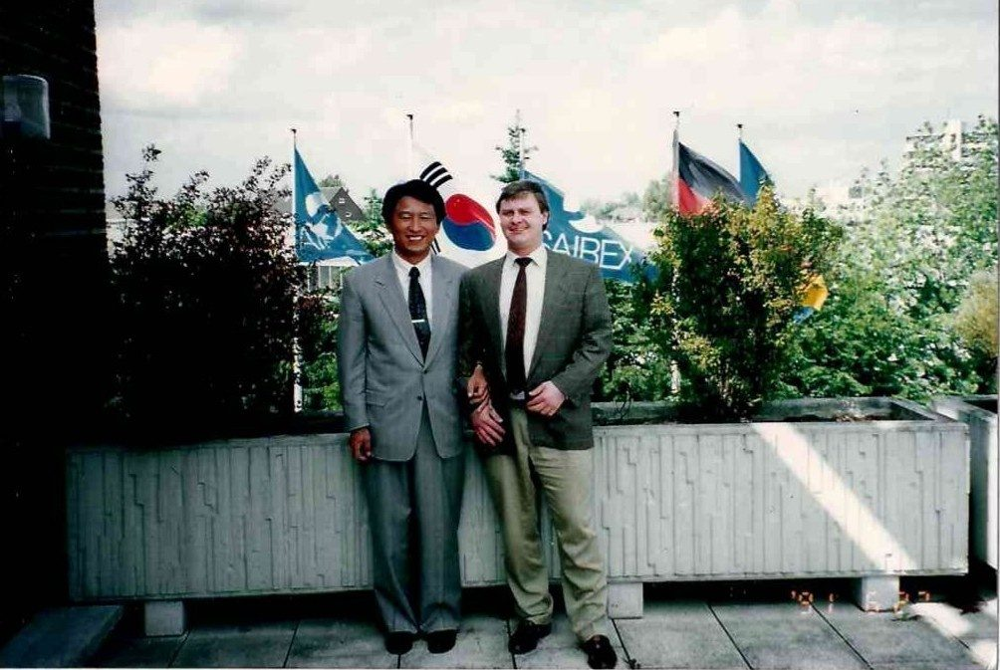
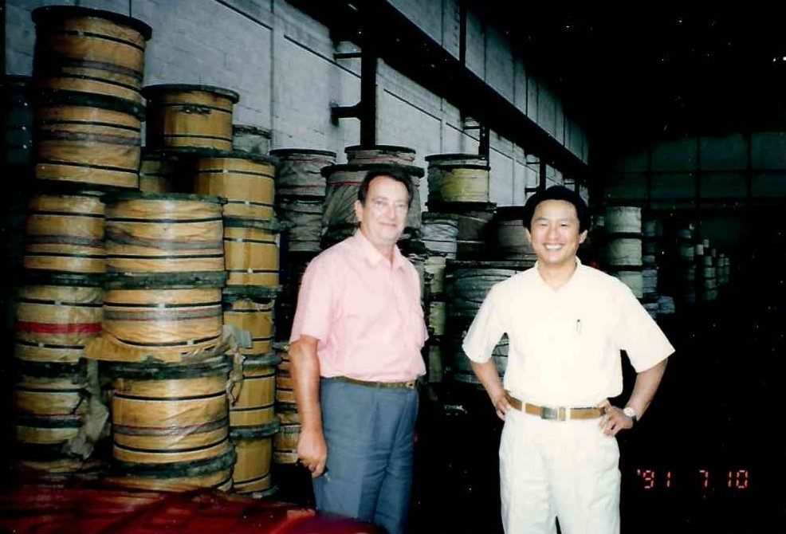
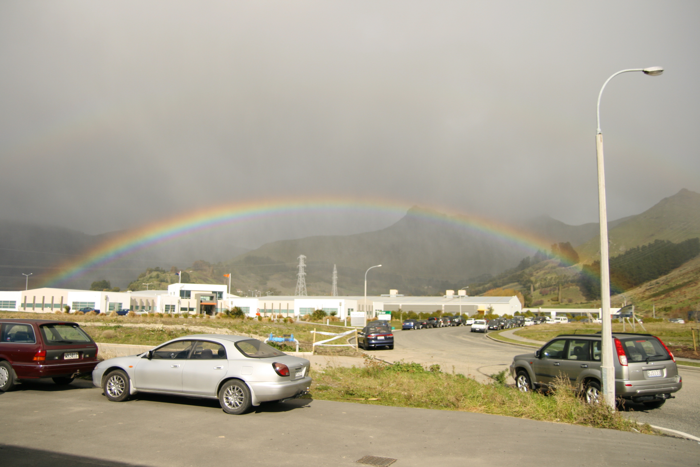
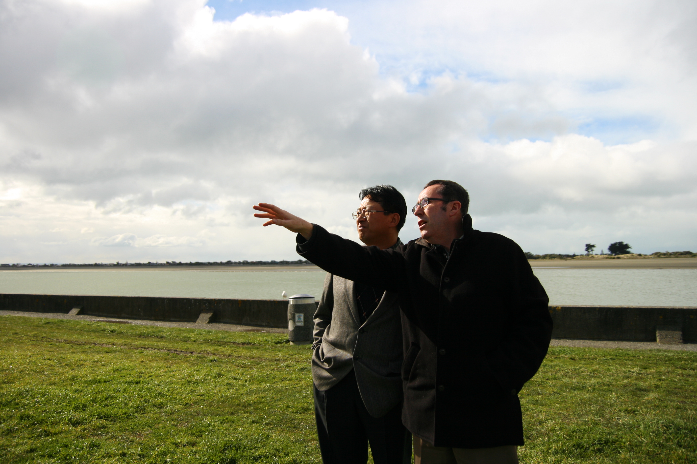
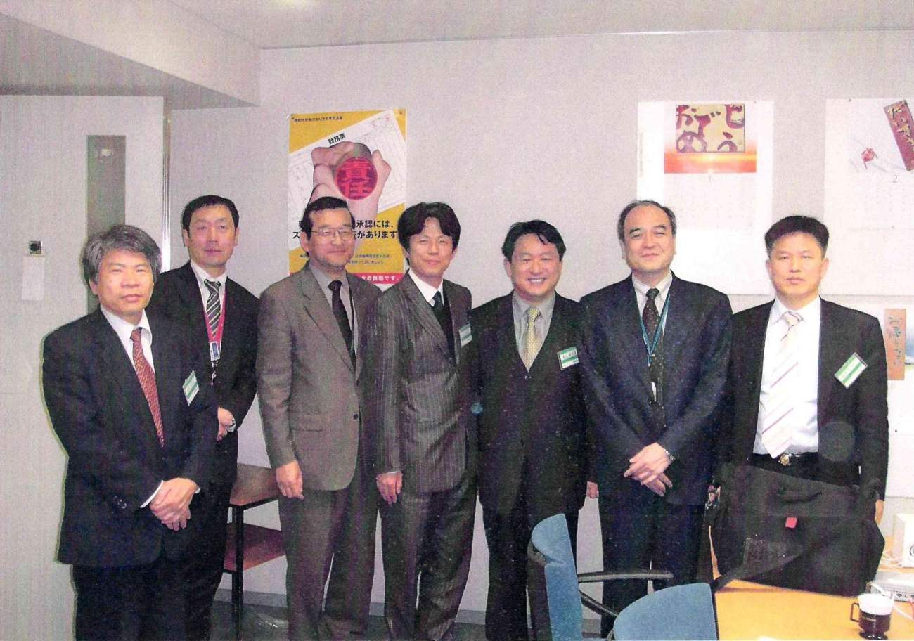
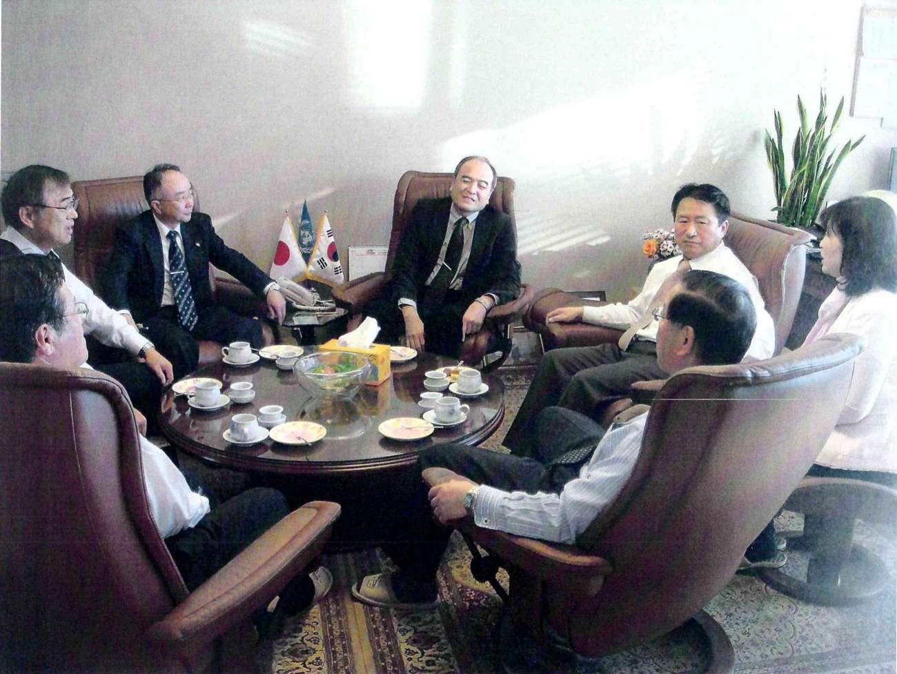
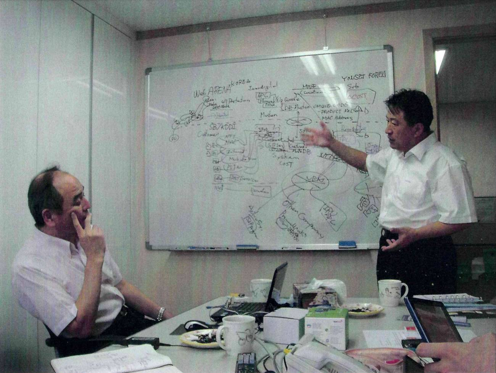
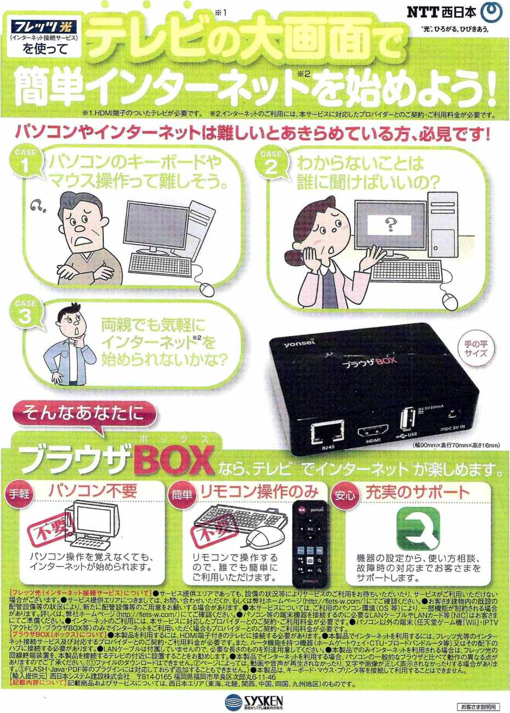

International Trading
Alongside the forwarding business I have worked the goods themselves, in three areas where I already knew the logistics well enough to carry the risk.
Steel came first. In 1991 I worked with two German houses — SAIREX GmbH on steel pipe from 26 June, and ESH GmbH on steel wire rope from 10 July. They were the same principals I was forwarding for at World Shipping & Air, which is how the trade started.
Timber followed, with Craigpine Timber Ltd of Winton, New Zealand and IndusParquet of Brazil — sawn timber and engineered flooring, a trade that lives or dies on moisture, stowage and arrival condition.
The IT business was the most recent: a delivery of 33,000 smart TV set-top boxes for NTT-West in Japan concluded on 21 September 2010.









